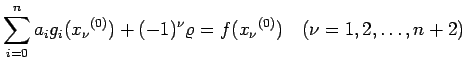
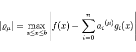

Inhalt Index DeskTop Bronstein

 Numerische Mathematik Approximation, Ausgleichsrechnung, Harmonische Analyse Tschebyscheff-Approximation Remes-Algorithmus
Numerische Mathematik Approximation, Ausgleichsrechnung, Harmonische Analyse Tschebyscheff-Approximation Remes-Algorithmus


Nach REMES geht man zur numerischen Bestimmung der Minimallösung wie folgt vor:
|  |
|  | (19.201) |
mit hinreichender Genauigkeit gilt.